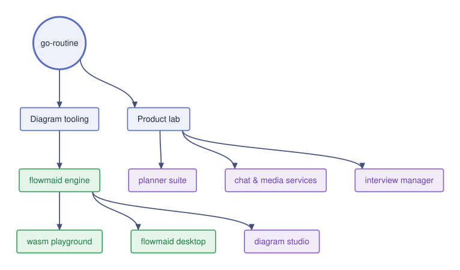

Small, fast, open developer tools — and the products we build on top of them.
Yes, the name is a goroutine pun. Lightweight, concurrent, gets a lot done.
Meet flowmaid → Playground GitHubThis map was rendered by our own diagram engine — that's the point.

Open source first — the lab graduates when it's ready.
A Mermaid-like diagram engine in pure std Rust. Zero dependencies, sub-millisecond renders, 166 KB in WebAssembly. crates.io · public roadmap
The whole engine in your browser — live editing, draggable nodes, SVG export. No server, no build step. Try it
A native diagram editor: live Mermaid text, drag & drop canvas, real file workflow. Source
A full architecture-diagram studio — AI-assisted editing, cloud imports, and flowmaid inside as the layout & routing engine.
Planner, chat, media & notification services, interview tooling — the products that keep our engineering honest about real-world needs.
Software tooling doesn't have to be heavy to be powerful. We believe the next generation of developer tools can be small, fast, and open — and that world-class engineering can come from anywhere, including Indonesia.
Build focused developer tools and the product infrastructure around them with zero-bloat engineering: measured performance, tested behavior, APIs that feel right — then open as much of it as we can.
go-routine is GO ROUTINE TECH — an independent, one-person software company from Indonesia. Small by design: the same philosophy as our tools.